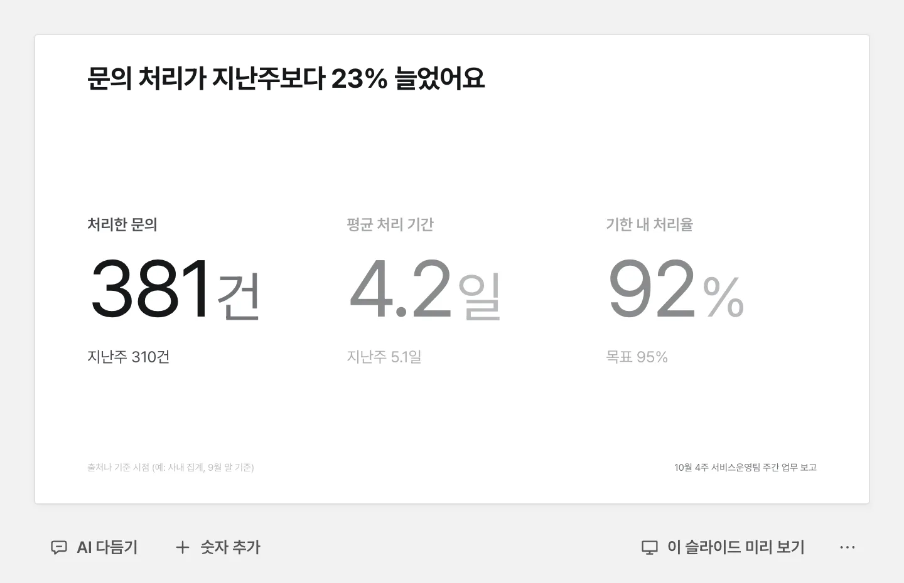
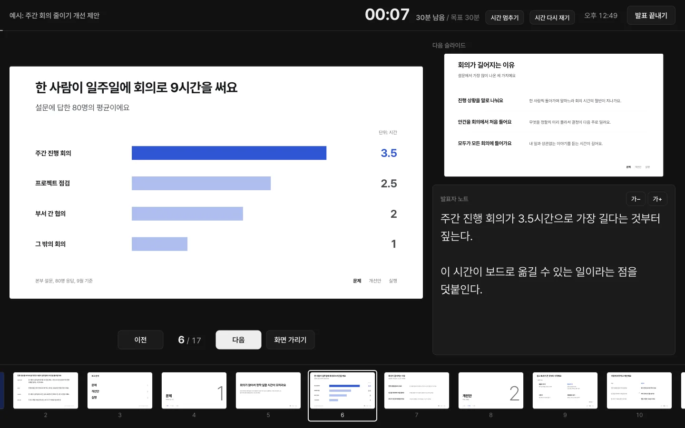
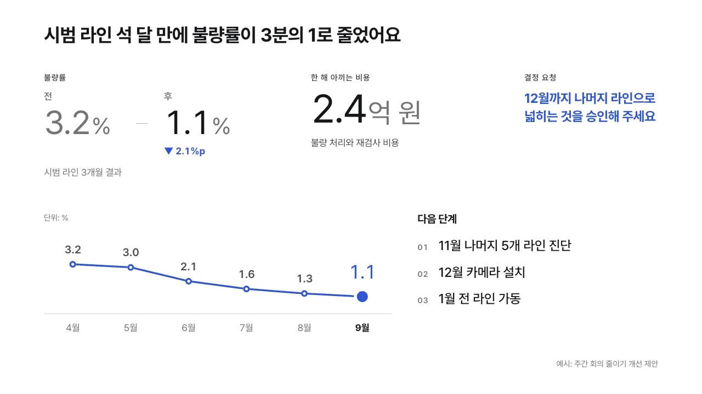

세 단계면 끝나요
-
1
고르기
발표 종류, 듣는 사람, 시간을 고르면 슬라이드 순서가 잡혀요.
-
2
채우기
흐린 예시 글씨를 고쳐 쓰면 돼요. 간격과 크기는 Framo가 맞춰요.
-
3
발표하기
F5로 시작해요. 파일 하나(HTML)나 영상(MP4)으로도 보내요.


그 밖에 할 수 있는 것

슬라이드를 직접 꾸밀 수도 있어요
큰 숫자, 전과 후, 차트 같은 컴포넌트를 끌어다 놓으면 가로세로 12칸 격자에 맞춰 붙어요. 옆에 놓으면 너비를, 위나 아래에 놓으면 높이를 나누고, 글이 잘리거나 빈 곳이 남지 않게 크기가 자동으로 정해져요. 사이의 경계선을 끌어 크기를 조절할 수 있고, 자리가 모자라면 억지로 넣지 않고 이유를 알려 줘요.
-
파일로 보내요
HTML 파일 하나로 내보내면 받는 사람은 Framo가 없어도 브라우저로 열 수 있어요. PDF나, 슬라이드를 이미지로 담은 PowerPoint 파일로도 내보낼 수 있어요.
-
버전이 남아요
고칠 때마다 저장되고, 발표하기 전 모습은 따로 남아요. ‘본부장 보고본’처럼 이름을 붙여 둔 버전으로 언제든 돌아가요.
-
테마를 골라요
흰 바탕과 검은 바탕, 강조색 아홉 가지 가운데 고르면 모든 슬라이드가 한 번에 바뀌어요.
-
발표할 때 움직여요
숫자와 막대가 차례로 나타나요. 모션은 없음, 차분하게, 생동감 가운데 골라요.
발표 내용은 이 PC 밖으로 나가지 않아요
이 PC에서만 열려요
127.0.0.1에서만 실행돼요.
인터넷으로 보내지 않아요
글꼴까지 프로그램 안에 있어요.
AI에게는 모양만
글과 숫자는 보이지 않아요.
모두 공개된 소스
MIT 라이선스 오픈소스예요.